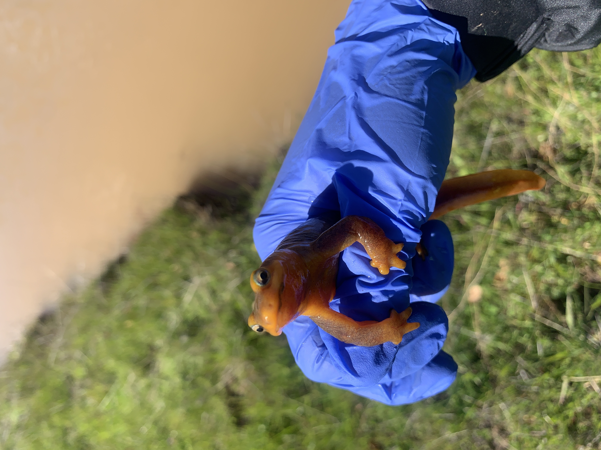

About Me
Lakes, streams, and the ocean have always captivated me, and for as long as I can remember, being in these environments have scratched a part of my brain like nothing else ever has. Going to the aquarium as a child, seeing miniature versions of these ecosystems, and witnessing how perfectly our planet sets up homes and roles for fish to fill was incredible to me. Fast forward to majoring in aquatic biology for my undergraduate degree at the University of California, Santa Barbara: learning more about general and aquatic ecology made me realize how interconnected our world is, and our natural planet is just composed of the same principles over different landscapes. Nature repeats itself in different forms, and understanding the underlying concepts of how living things interact with the physical world can explain a multitude of patterns we see from the sea to land (for some reason, I remember the intermediate disturbance hypothesis being so fascinating to me specifically). The only way to preserve our beautiful planet is to understand how it functions.
After taking a biometry course and working in a research lab at UCSB, I became very interested in statistics and understanding how we use data to explain research results, and in effect, our environment. This drove me to pursue a Master’s degree in Environmental Data Science through the Bren School of Environmental Science & Management, which I completed in June 2024. During this program, I learned a lot more about proper data practices and more sophisticated types of analyses while improving my coding skills in R and Python. I also had the opportunity to work on a project with the Scripps Institution of Oceanography and CalCOFI to create a tool for Southern California anglers to use and receive personalized information about the risks of consuming their locally caught seafood (look at the website here!). This degree increased my interest in data and coding, and I now have a new skill set to use in conjunction with my original interest in research and ecology.
Nature is beautiful and providing, and I still hold onto the importance of understanding our environment to learn how to use our resources responsibly and preserve our planet for future generations to enjoy. I hope to continue to use my experiences in research, data science, and biology to ultimately help others better understand our natural world and assist in making informed decisions about future research and conservation efforts. I am also always interested in learning more about how to apply data in novel, helpful ways to expand our field of knowledge!
A little photo gallery :)
Three years of working in a lab came with a lot of field work! Here are some highlights.

In my personal life, I enjoy trying new hobbies and always try to find joy in the little things. For one, I love taking photos of duck pairs and have a large collection of duck friends (see photo above!). The main joys in my life come from animals and existing outside, but I also have fun with my indoor hobbies such as painting and crocheting. In this moment of time, I have been spending a lot of my time taking walks, growing vegetables, and running!
Little photos I’ve taken of things I love <3: